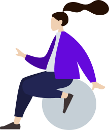

I graduated from Rochester Institute of Technology in May 2020 with a B.S. in Human-Centered Computing.
My pursuit in the field of User Experience had roots in psychology and user research; I branched out in web design and development internships, which then stemmed into doing freelance design & UX contract work with Innovia CoLabs, LLC 🡕.
I am currently in the process of starting a human-centered design practice with my colleagues at Innovia, and we are always open to new opportunities involving UX research, prototyping, and design.
In my free time, I enjoy writing calligraphy, hiking the trails, dabbling in code, creative writing, folding origami, and caring for my adorable rabbits.